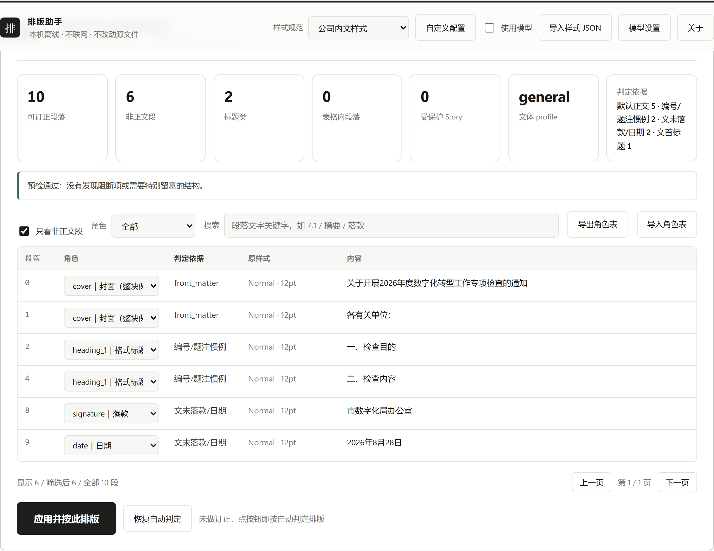
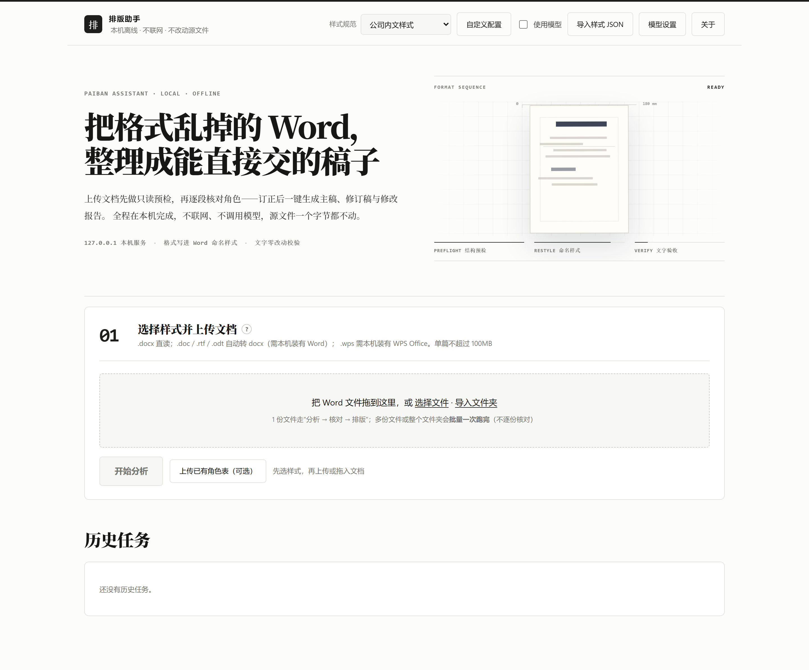
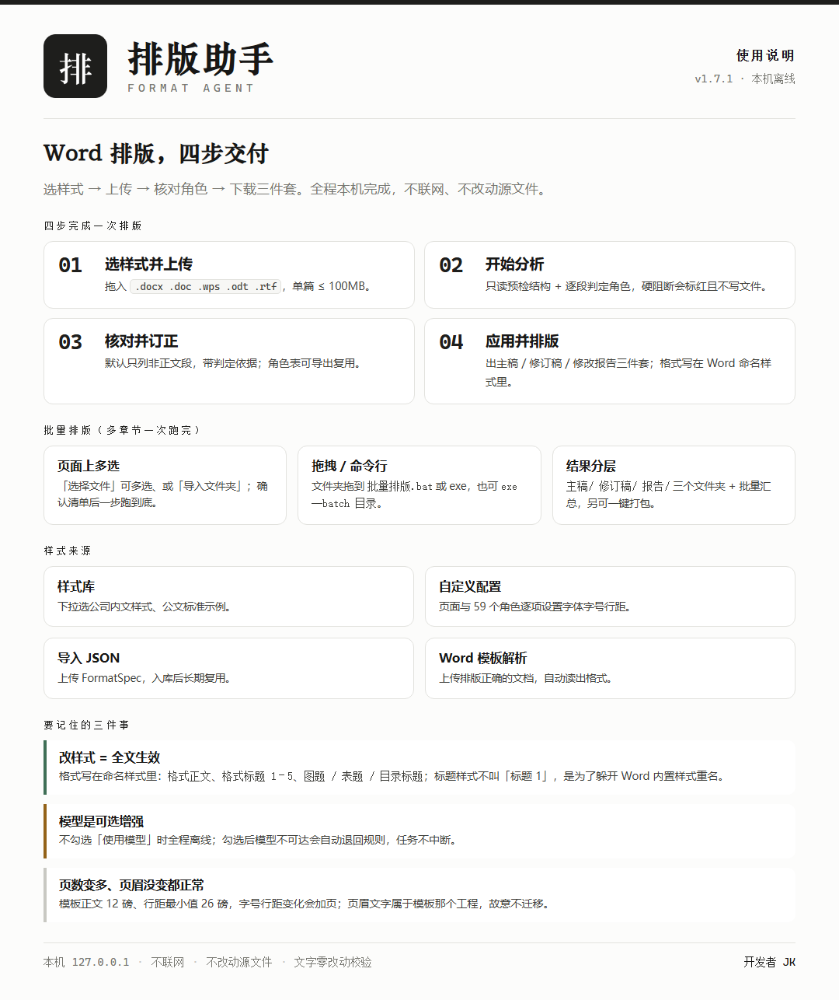
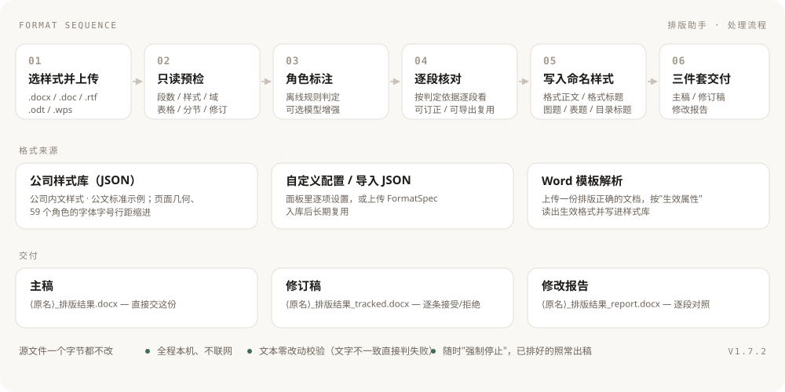

把格式乱掉的 Word，
整理成能直接交的稿子
上传文档先做只读预检，再逐段核对角色；订正后一键生成主稿、修订稿与修改报告。
多章节可以整批一次跑完——全程在本机完成，不联网、不改动源文件。
- 逐段角色判定
- 格式写进命名样式
- 主稿 / 修订稿 / 修改报告
- 批量排版 · 一键打包

What it solves
它解决什么问题
一条流水线把"格式乱、改起来靠手、交付要能审阅"这几件事一次做完。
逐段角色判定
标题 / 正文 / 落款 / 日期 / 题注 / 封面 / 目录…每段都给出判定依据（编号惯例、大纲级别、命名样式、文首文末位置），可逐段订正。
格式写进命名样式
成品不靠硬刷格式：在 Word 样式窗格里改一次「格式正文 / 格式标题 2」，全文立刻统一。
三件套交付
主稿直接交；修订稿带修订标记，可在 Word 审阅视图里逐条接受/拒绝；修改报告逐段对照。
文字零改动校验
排版前后校验文字：正文与受保护 Story 文字不一致就判失败、不落盘；源文件永不覆盖。
多章节一次跑完
「封面+目录」与各章节整批处理，每份独立出稿、不合并、不动各章页码，结果按类型分文件夹。
随时能停
分析/排版跑起来后随时「强制停止」：停在下一个检查点，已排好的照常出稿，任务闸门立即释放。
Screens
界面一览
本地工作台（只监听 127.0.0.1）：所有操作都在浏览器里完成。


Pipeline
处理流程
六步确定性流水线；只有"角色标注"这一步可选地调用本机模型。

- 选样式并上传：支持
.docx/.doc/.rtf/.odt/.wps，后四者用本机 Word / WPS 转档。 - 只读预检：扫正文、页眉页脚、脚注、文本框、表格、分节、域与修订，列出"只保留、不重排"的结构。
- 角色标注：默认离线规则；勾选「使用模型」时由本机模型补足疑难段落，模型不可达自动退回规则。
- 逐段核对：默认只列非正文段，可筛选/搜索/改角色，角色表可导出复用。
- 写入命名样式：页面几何、页眉页脚、目录、表格、图表题注统一套用；首个一级标题不分页、封面整块保护。
- 三件套交付：目录/页码域在本机 Word 空闲时刷新，被占用则降级为"打开时更新"。
Batch
批量排版（多章节一次跑完）
页面上多选 / 导入文件夹，或把文件夹拖到 exe / bat 上，也可以走命令行。
页面上多选
「选择文件」可多选，或「导入文件夹」；确认清单后点「开始批量排版」一步到底。
拖拽 / 命令行
文件夹拖到 批量排版.bat 或 排版助手.exe；也可 exe --batch 目录。
结果分层
每份独立出稿、不合并、不改各章页码；另可一键打包整批 zip。
_排版结果_<时间戳>/ 主稿/ <原名>_排版结果.docx 修订稿/ <原名>_排版结果_tracked.docx 报告/ <原名>_排版结果_report.docx 批量汇总.md / 批量汇总.csv ← 逐份状态、段落数、角色统计、域刷新、需人工核对项
每份的 Markdown 报告与 .doc 转换稿属于过程件，不进结果目录（页面批量放在任务目录的 _过程/，命令行用系统临时目录）。
Under the hood
技术实现（简要）
内核
Python 3.14 + python-docx，直接改 OOXML（样式、段落、域、分节、修订）；读生效属性、写命名样式，不做字符串拼接。
界面
原生 HTML/CSS/JS 的本地工作台，只监听 127.0.0.1；任务串行执行，事件流实时推送进度。
交付
PyInstaller onedir 打包；分发版内核只保留 .pyc，密钥一律留空、由使用者自己填。
质量
189 项自检（单元 + 端到端，含真实大稿）+ 7 个版本验收脚本；排版前后做文字零改动校验。
FAQ
常见问题
点开每条看答案（这些也是使用说明卡片里的那几条）。
排版后页数变了？
正常。模板正文是宋体 12 磅、行距最小值 26 磅，字号或行距一变，页数就会跟着变。
标题样式为什么叫「格式标题 1」，而不是「标题 1」？
「标题 1」与 Word 内置标题重名：Word 在"刷新域并保存"时会把自定义样式改名成 「标题 11 / 21 / 31」并换掉样式 ID，越排越多。改成「格式标题 N」后名字与 ID 都稳定， 格式照样写在样式里——改一次、全文生效。
排版后页眉页脚没变？
有意为之。模板页眉写的是模板那个工程的名字，跨文档套用会写错；要迁移页眉文字，请按目标稿的
节数配 page.section_overrides 点名覆盖。
目录与正文分册时，目录页码不对？
「封面+目录」单独一份时，目录域在它自己这一份里刷不出章节页码。工具会识别这种情况： 跳过目录刷新、保留原目录，并在批量汇总的"需要人工核对"里提示——页码请在合并稿里刷新或人工核对。
某个标题没认对？
在核对页的订正表里改角色即可；同类文档想长期复用，改完点「导出角色表」，下次上传时套用。
别人机器上打开，字体变了？
交付稿依赖终端装有黑体、宋体、仿宋_GB2312 等中文字体；内网请统一安装同一套字体， 否则 Word 会用替代字体显示。
提示「已有任务在运行」？
单任务串行：等当前任务结束再提交即可（避免文件与 Office 进程互相干扰）。 跑大稿时也可以点「强制停止」，停在下一个检查点、已排好的照常出稿。
Changelog
版本历史
| 版本 | 主要变化 |
|---|---|
| V1.7.1 | 修「正文没改却被拦下」：预检只拦会影响文字读取的修订（插入/删除/表格结构），编号与格式级修订改为提示 |
| V1.7.0 | 批量共用一个 Word 会话（实测 6 份 57 s → 31 s）；COM 改用 late binding，pywin32 类型库缓存损坏也能正常调用 |
| V1.6.0 | 修「页脚页码被误判不是宋体」（页脚段落读不到 docDefaults）；自检 189/189 全绿 |
| V1.5.0 | 标题命名样式改为「格式标题 1–5」，根治 Word 改名与样式累积；表题数字回 Times New Roman |
| V1.4.9 | 批量结果分「主稿/修订稿/报告」三个文件夹；过程件不进结果目录；目录与正文分册时跳过目录刷新 |
| V1.4.7 | 页面上做批量排版（多选文件 / 导入文件夹） |
| V1.4.0 | 支持封面 / 内封 / 签名页 / 目录：封面整块保护、目录统一格式、自动分节 |